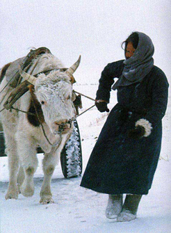

OX

The Mongol name for ox is 'ukher'. The cow milk is considered as the best milk for milk tea, cream and cheese. Beef is also very welcome among the Mongols. Good leather is always made of ox skin. Ox is also the only ranimal for the Mongolian cart, a wooden cart with a pair of big wooden wheels. It is really slow, but the Mongols enjoy it . Usually the cart is driven by single ox, but the royal cart of Genghis Khan was driven by 80 white oxen. Ox is the symbol of sturdiness and sometimes, stubbornness. Yaks are popular in the cold regions of Mongolia and considered to be kind of ox.